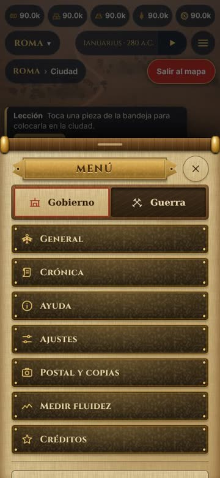
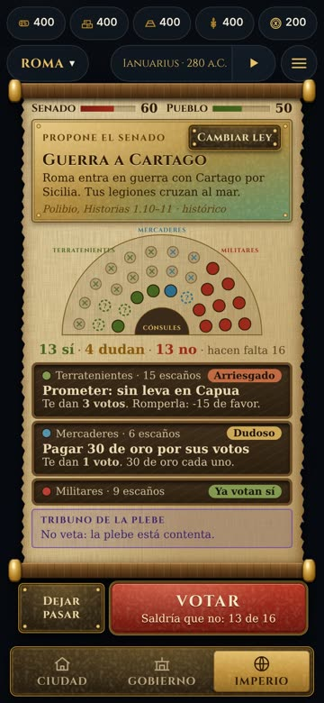
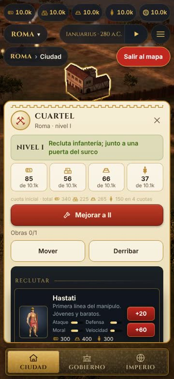
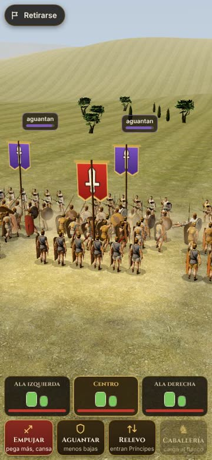
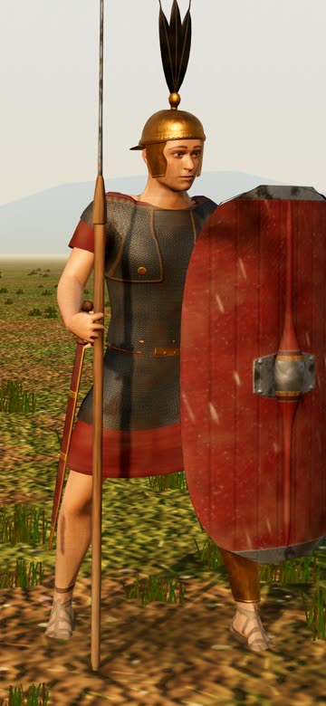
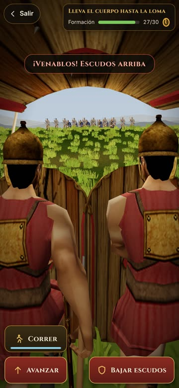

Estado del proyecto
4tareas faltan




Qué queda
2,8previsto
5M real
Por qué no se cierra
12
+10
−2
Jueces: 35 de 37
Sesiones abiertas: 2 de 8 en la 1.0
Por qué tarda
Previsto esta semana
174 M
Gastado
254 M
+79 %hoy
Por qué se desvía


17 M en maquetas
7,4 M toda la 1.0
Decides tú